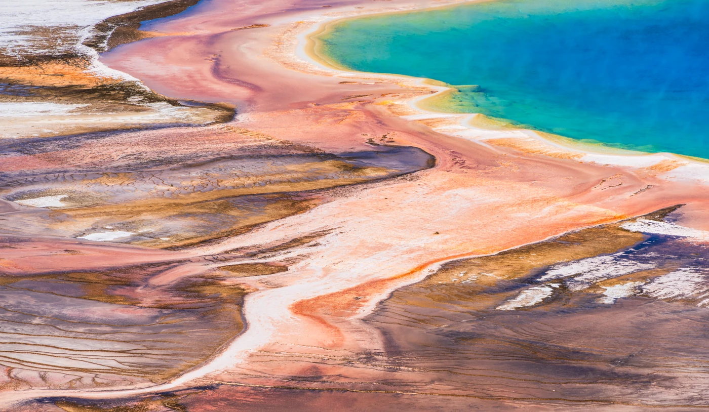
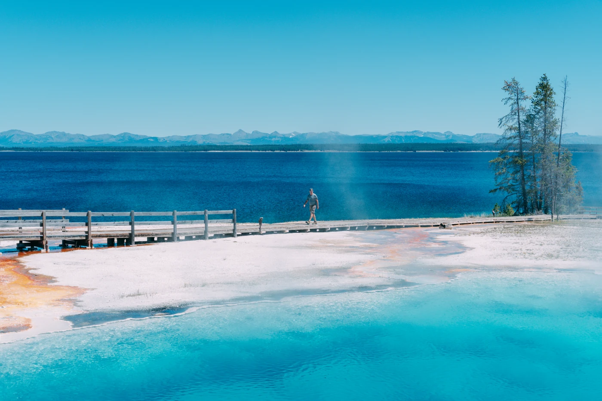
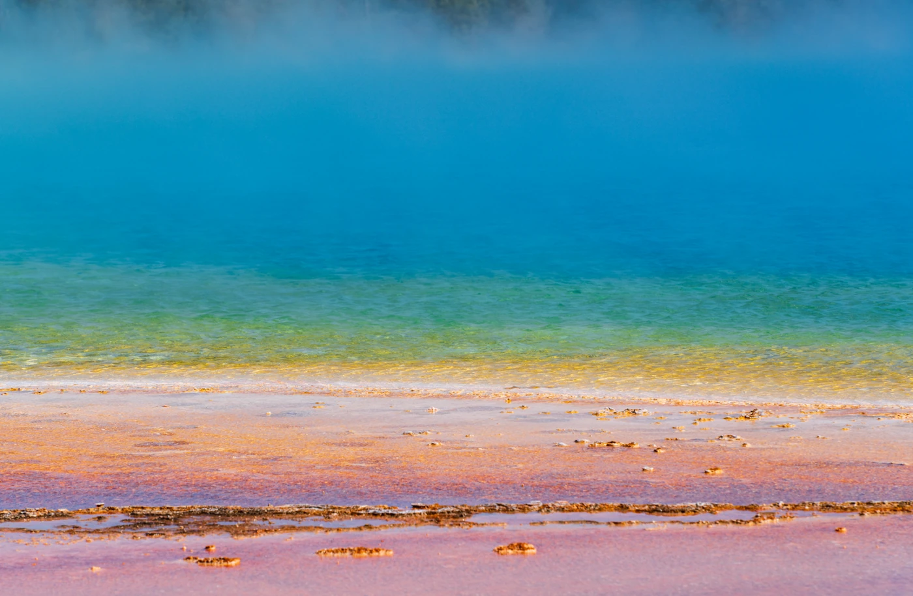

Photography
Yellowstone National Park
Land · Yellowstone National Park











Photographs by Jipeng Li.
Get in touch ↗Photography
Land · Yellowstone National Park



Photographs by Jipeng Li.
Get in touch ↗